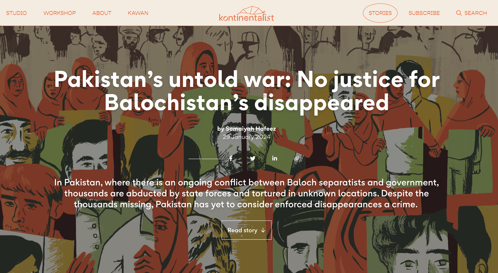
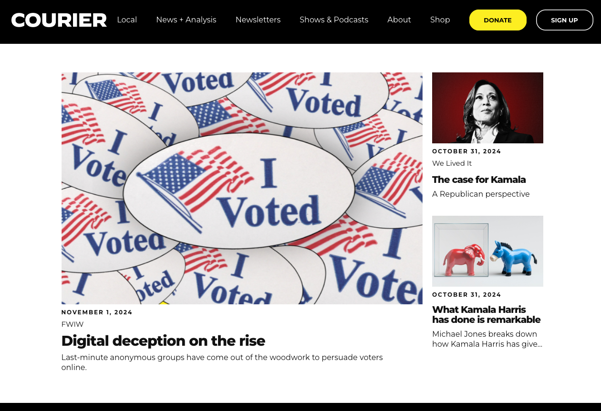
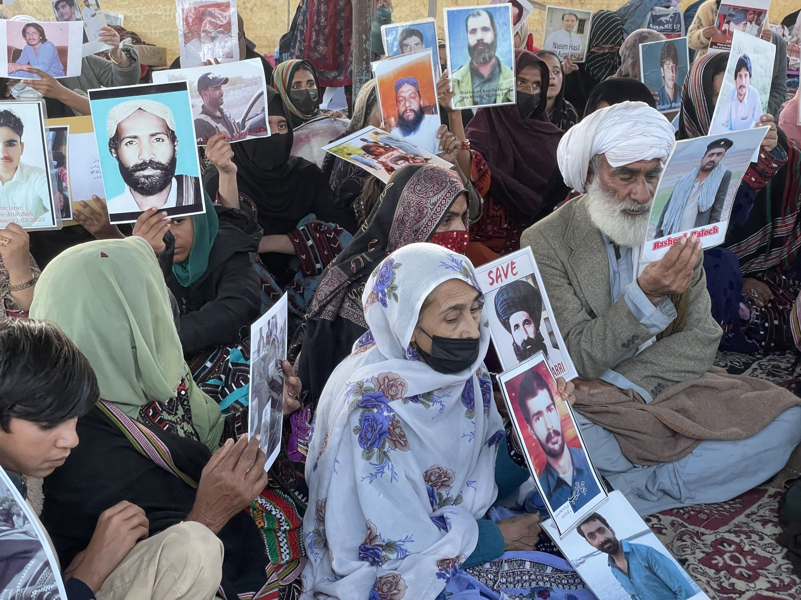
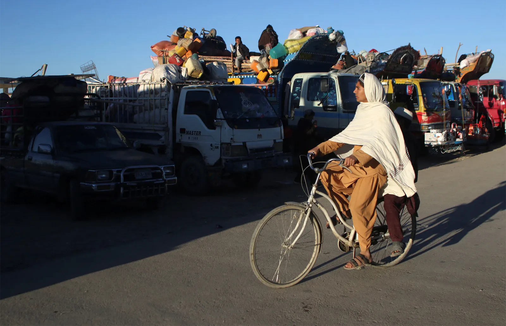
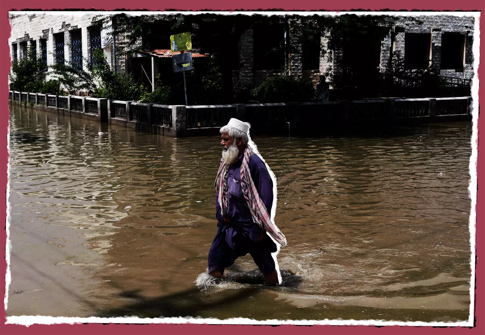
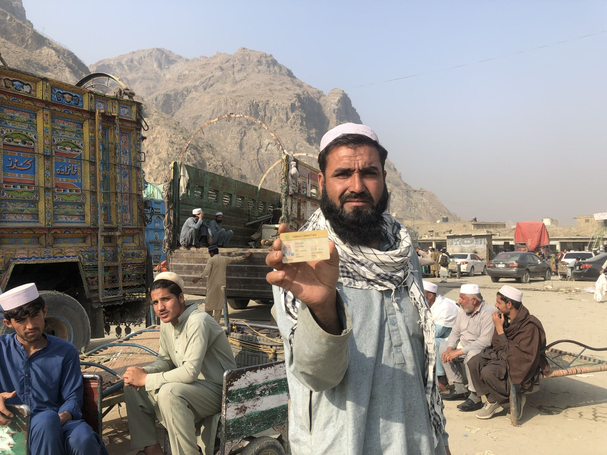
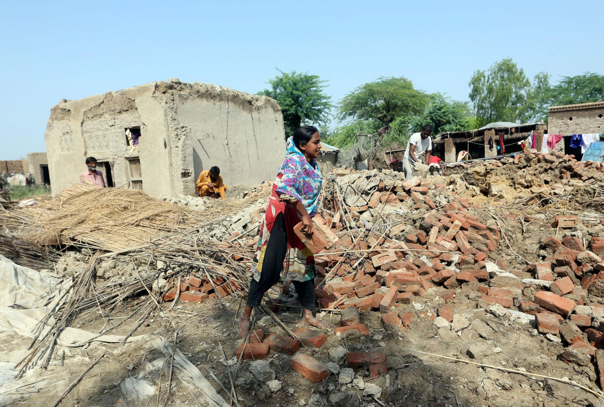
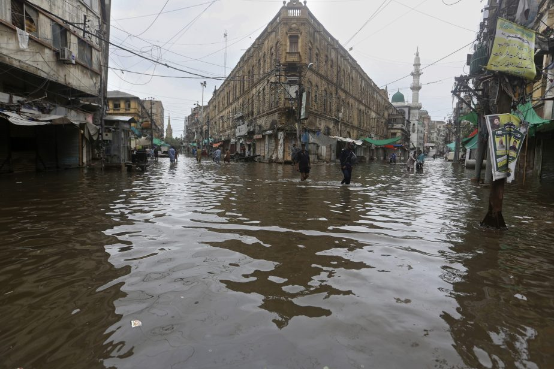

'House of love': the creative space changing young lives in Karachi
In Lyari, a slum notorious for violence, Mehr Ghar offers young people a safe place.

Pakistan's Untold War: No Justice for Balochistan's Disappeared
In Pakistan, thousands are abducted by state forces and tortured in unknown locations.

Courier Newsroom Spent Big on a Meta Ad Blitz in October
The $6M+ the progressive 'newsroom' spent on Meta lagged only Trump and Harris campaigns.

Why Baloch Women in Pakistan Led An Unprecedented March
Protesting against enforced disappearances and extrajudicial killings in a remote province.

Afghans Fear Life on Both Sides of the Durand Line
'I'd rather die in Pakistan than go back to Afghanistan.'

For Pakistan Flood Victims, Crises Collide to Fuel Growing Hunger
'We cook the same vegetables almost every day... and haven't had meat in months.'

Afghan Refugees Born in Pakistan Are Leaving Their Lives for the Unknown
As 'unauthorized' refugees are forced to cross the border, many lament being sent to a country they know nothing about.

After Successive Floods, Pakistan Is Forced to Consider Resilient Housing
An architect's innovative model for flood-resilient homes shows the way forward.

Pakistan's Deadly Floods Are an Annual Occurrence
Why does Karachi flood almost every year during the monsoon season?